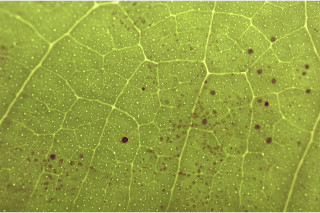
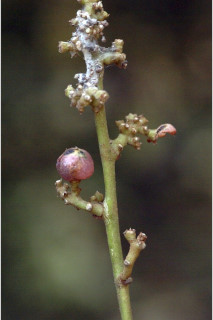
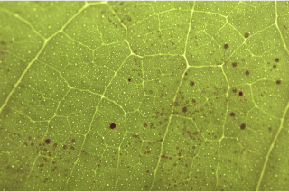
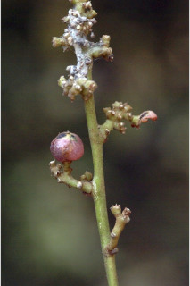

Large shrubs to small trees up to 4 m tall.
ದೊಡ್ಡ ಗಾತ್ರದ ಪೊದೆಗಳಿಂದ 4 ಮೀ ಎತ್ತರದವರೆಗಿನ ಸಣ್ಣ ಗಾತ್ರದ ಮರಗಳು.
Large shrubs to small trees up to 4 m tall.
பெரிய குத்துச்செடி முதல் சிறிய மரம் 4 மீ. உயரம் வரை வளரக்கூடியது.
Bark brown, smooth.
ತೊಗಟೆ ಕಂದು ಬಣ್ಣ ಹೊಂದಿದ್ದು ನಯವಾಗಿರುತ್ತದೆ.
Bark brown, smooth.
மரத்தின் பட்டை ப்ரவுன், வழுவழுப்பானது.
Young branchlets subterete, glabrous.
ಎಳೆಯ ಕಿರುಕೊಂಬೆಗಳು ಉಪದುಂಡಾದ ಆಕಾರ ಹೊಂದಿದ್ದು ರೋಮರಹಿತವಾಗಿರುತ್ತವೆ.
Young branchlets subterete, glabrous.
சிறியநுனிக்கிளைகள் குறுக்குவெட்டுத் தோற்றத்தில் வளையமானது, உரோமங்களற்றது.
Leaves compound, imparipinnate (rarely 1-foliolate), alternate, spiral; rachis pulvinate, terete, glabrous; petiolule 0.2 cm long, planoconvex in cross section, glabrous; leaflets 3-5, alternate, 9-16.5 x 3.5-5 cm, oblong or elliptic, apex shortly acuminate with blunt tip or obtuse to acute, base acute, margin crenulate, glandular punctate, glabrous; secondary_nerves 7-13 pairs, looped near margin; tertiary_nerves admedially ramified.
ಎಲೆಗಳು ಸಂಯುಕ್ತವಾಗಿದ್ದು,ಅಸಮಗರಿ ರೂಪಿಗಳಾಗಿದ್ದು(ಅಪರೂಪವಾಗಿ ಏಕಪರ್ಣಿಕೆಗಳಾಗಿರುತ್ತವೆ), ಪರ್ಯಾಯ ಹಾಗೂ ಸುತ್ತು ಜೋಡನಾ ಮಾದರಿಯಲ್ಲಿ ಜೋಡನೆಗೊಂಡಿರುತ್ತವೆ; ಅಕ್ಷದಿಂಡು ದುಂಡಾಗಿದ್ದು,ಉಬ್ಬಿದ ಬುಡ ಸಮೇತವಿರುತ್ತದೆ ಹಾಗೂ ರೋಮರಹಿತವಾಗಿರುತ್ತದೆ;ಉಪತೊಟ್ಟುಗಳು 0.2 ಸೆಂ.ಮೀ.ಉದ್ದ ಹೊಂದಿದ್ದು ಅಡ್ಡ ಸೀಳಿದಾಗ ಸಪಾಟ ಪೀನ ಮಧ್ಯದ ಆಕಾರದಲ್ಲಿರುತ್ತವೆ ಮತ್ತು ರೋಮರಹಿತ -ವಾಗಿರುತ್ತವೆ ; ಕಿರುಪತ್ರಗಳು3 ರಿಂದ 5 ಇದ್ದು ಪರ್ಯಾಯವಾಗಿ ಜೋಡಿತಗೊಂಡಿರುತ್ತವೆ, 9 -16.5 X 3.5 - 5 ಸೆಂ.ಮೀ ಗಾತ್ರ,ಚತುರಸ್ರ ಅಥವಾ ಅಂಡವೃತ್ತದ ಆಕಾರ, ಮೊಂಡಾಗ್ರವುಳ್ಳ ಕಿರಿದಾದ ಕ್ರಮೇಣ ಚೂಪಾಗುವ ಮಾದರಿಯ ಅಥವಾ ಚೂಪಲ್ಲದುದರಿಂದ ಅಥವಾ ಚೂಪಾದ ಮಾದರಿಯ ತುದಿ,ಚೂಪಾದ ಬುಡ, ಸೂಕ್ಷ್ಮ ದುಂಡೇಣುಗಳನ್ನೊಳಗೊಂಡ ಅಂಚು,ಮಚ್ಚೆ ರೀತಿಯ ರಸಗ್ರಂಥಿಗಳ ಸಮೇತವಿದ್ದು ರೋಮರಹಿತವಾಗಿರುತ್ತವೆ; ಎರಡನೇ ದರ್ಜೆಯ ನಾಳಗಳು 7-13 ಜೋಡಿಗಳಿದ್ದು ಅಂಚಿನ ಬಳಿ ಕುಣಿಕೆಗೊಂಡಿರುತ್ತವೆ;ಮೂರನೇ ದರ್ಜೆಯ ನಾಳಗಳ ಕವಲುಗಳು ಎಲೆಗಳ ಅಕ್ಷದ ಕಡೆಗಿರುತ್ತವೆ.
Leaves compound, imparipinnate (rarely 1-foliolate), alternate, spiral; rachis pulvinate, terete, glabrous; petiolule 0.2 cm long, planoconvex in cross section, glabrous; leaflets 3-5, alternate, 9-16.5 x 3.5-5 cm, oblong or elliptic, apex shortly acuminate with blunt tip or obtuse to acute, base acute, margin crenulate, glandular punctate, glabrous; secondary_nerves 7-13 pairs, looped near margin; tertiary_nerves admedially ramified.
இலைகள் கூட்டிலை, ஒற்றைபடை சிறகு வடிவக்கூட்டிலைகள் (அரிதாக 1-சிற்றிலையுடையது), மாற்றுஅடுக்கமானவை, சுழல் போன்று அமைந்தவை; மத்தியகாம்பு (ராக்கிஸ்) பல்வினேட், குறுக்குவெட்டுத் தோற்றத்தில் வளையமானது, உரோமங்களற்றது; சிற்றிலைக்காம்பு 0.2 செ.மீ. நீளமானது, குறுக்குவெட்டுத் தோற்றத்தில் பிளேனோகான்வக்ஸ், உரோமங்களற்றது; சிற்றிலை 3-5, மாற்றுஅடுக்கமானவை, 9-16.5 X 3.5-5 செ.மீ., நீள்சதுர வடிவானது அல்லது நீள்வட்ட வடிவானது, அலகின் நுனி சிறிது அதிக்கூரியதுடன் அதன் முனை மழுங்கியது அல்லது மெட்டையானது முதல் கூரியது, அலகின் தளம் கூரியது, அலகின் விளிம்பு சிறிய பிறை போன்ற பற்களுடையது, ஒளிபுகும் சுரப்பி புள்ளிகளுடையது, உரோமங்களற்றது; இரண்டாம் நிலை நரம்புகள் 7-13 ஜோடிகள், ஒன்றொடுன்று விளிம்பின் அருகில் (லுப்) இணைந்தவை; மூன்றாம் நிலை நரம்புகள் அட்மீடியல்லி ராமிபைடு.
Inflorescence axillary panicles, tomentose; flowers small, white, sessile.
ಪುಷ್ಪಮಂಜರಿಗಳು ಅಕ್ಷಾಕಂಕುಳಿನಲ್ಲಿನ ಪುನರಾವೃತ್ತಿಯಾಗಿ ಕವಲೊಡೆಯುವ ಮಾದರಿಯವುಗಳಾಗಿದ್ದು ದಟ್ಟ ಮೃದು ತುಪ್ಪಳದಿಂದ ಕೂಡಿರುತ್ತವೆ;ಹೂಗಳು ಬಿಳಿ ಬಣ್ಣ ಹೊಂದಿದ್ದು ಸಣ್ಣ ಗಾತ್ರದವುಗಳಾಗಿದ್ದು ತೊಟ್ಟುರಹಿತವಾಗಿರುತ್ತವೆ.
Inflorescence axillary panicles, tomentose; flowers small, white, sessile.
மஞ்சரி இலைக்கோணங்களில் காணப்படுபவை பேனிக்கிள் வகை மஞ்சரி, உரோமங்களுடையது; மலர்கள் சிறியவை, வெள்ளை நிறமானது, காம்பற்றது.
Berry, globose, apiculate, up to 2 cm across; seeds 2-3.
ಬೆರ್ರಿಗಳು ಗೋಳಾಕಾರದಲ್ಲಿದ್ದು ಅಗ್ರದಲ್ಲಿ ಸಣ್ಣ ಮೊನಚು ಮುಳ್ಳಿನ ಸಮೇತವಿರುತ್ತವೆ, 2 ಸೆಂ.ಮೀ. ವರೆಗಿನ ಗಾತ್ರ ಹೊಂದಿರುತ್ತವೆ;ಬೀಜಗಳ ಸಂಖ್ಯೆ 2 ರಿಂದ 3.
Berry, globose, apiculate, up to 2 cm across; seeds 2-3.
முழுச்சதைகனி (பெர்ரி), கோள வடிவமானது, நீட்சியுடையது, 2 செ.மீ. குறுக்களவுடையது; விதைகள் 2-3.


 


